EBHCS Advisor Bulletin Board - Posting Guide
How to create, preview, publish, and manage Bulletins, Resources, and Calendar/Event posts in the Advisor Portal.
What Changed
The EBHCS bulletin board has grown from a simple list of posts into a student-facing support hub and a more complete advisor posting tool.
For students
- The site is easier to browse by topic, date, and type of help.
- Students can use Find Help to scan resources by action, such as getting housing help, applying for SNAP, finding legal help, or taking English classes.
- Resource cards now show clear action buttons like Website, Directions, Call, Open form, and extra buttons for important links or PDFs.
- Repeated events and multi-session bulletins stay visible as upcoming sessions approach.
- English and Spanish labels help students understand key actions quickly.
For advisors
- The Advisor Portal now separates posting into Bulletins, Resources, and Calendar Events.
- The composer gives advisors optional detail blocks for Spanish text, dates, links, contact information, audience, and resource actions.
- Advisors can add multiple session dates to one bulletin instead of making duplicate posts.
- Resources can include student action chips and up to 5 extra URL or PDF buttons.
- Separate management pages make it easier to edit or delete bulletins, resources, and events after publishing.
Student Site Screenshots
These screenshots show the public student experience advisors are posting into.
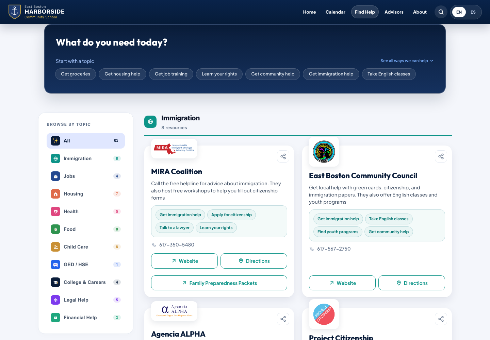
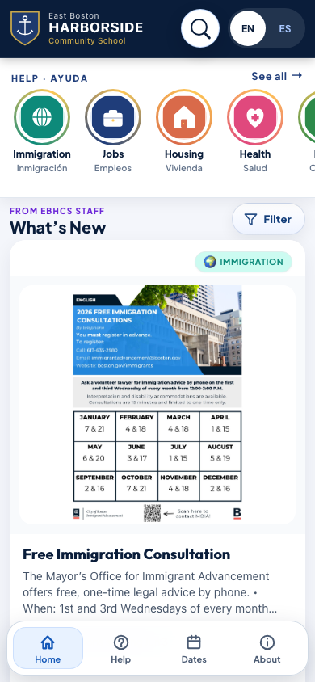
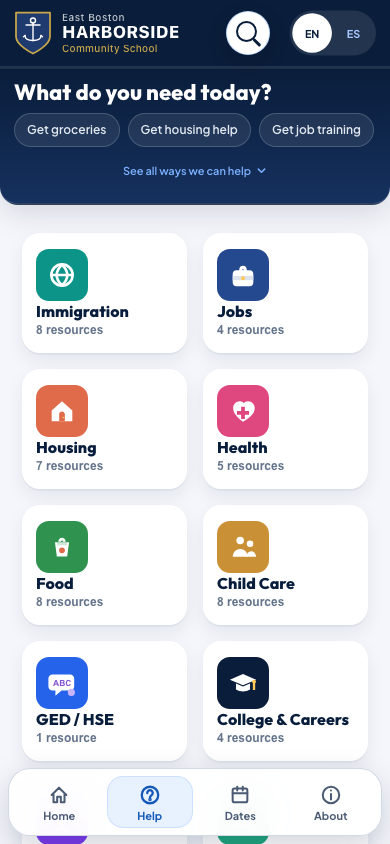
Quick Start
- Open the student bulletin board website.
- Scroll to the bottom and select Advisor Portal.
- Log in with your EBHCS advisor account.
- Open Create Post.
- Choose Bulletin, Resource, or Calendar/Event.
- Fill in the main fields, add details, preview, then publish.
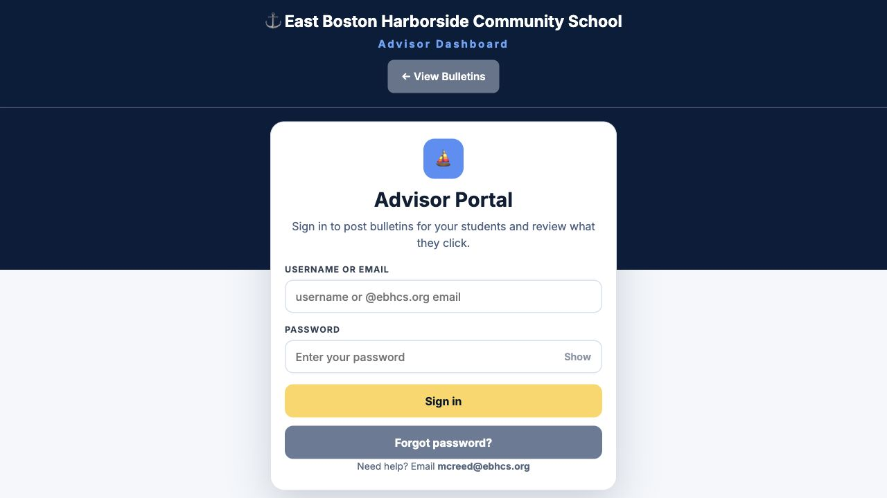
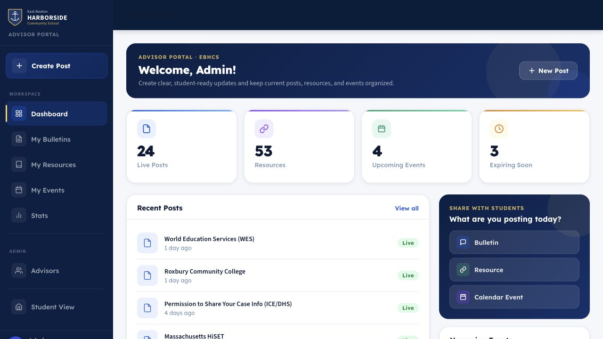
Create A Post
Open Create Post and pick the post type before filling in details.
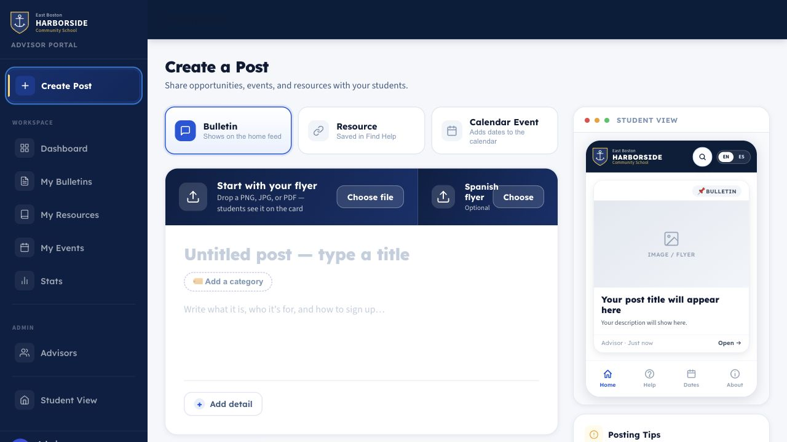
- Bulletin: job help, trainings, announcements, deadlines, and general opportunities.
- Resource: Ongoing services, forms, help organizations, and student support links.
- Calendar/Event: Events that should appear as dated student opportunities.
Start with the English title, category or resource category, and summary/details. Then use Add detail for Spanish text, dates and times, links, contact/location, and audience.
Bulletin Dates And Multiple Sessions
Use Dates & times when a bulletin has a deadline, event date, date range, or repeated sessions.
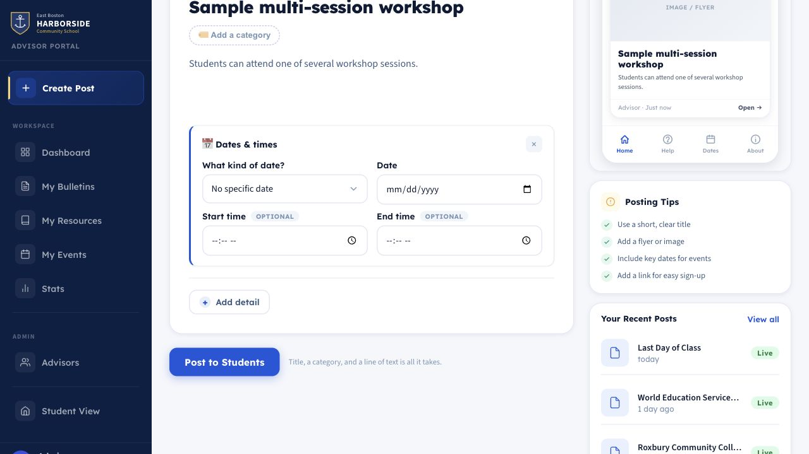
For multiple meeting dates
- Select Add detail.
- Choose Dates & times.
- In What kind of date?, choose Multiple sessions.
- Add at least two session dates.
- Add start and end times when useful for students.
- Preview before publishing.
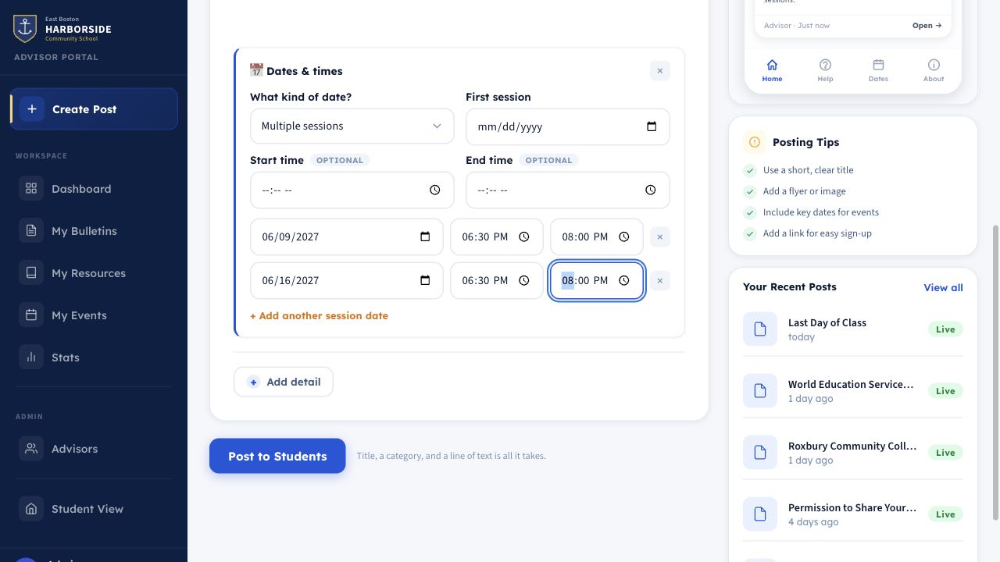
Resource Posts And Student Action Chips
Choose Resource for ongoing help, organizations, forms, service directories, or student support pages.
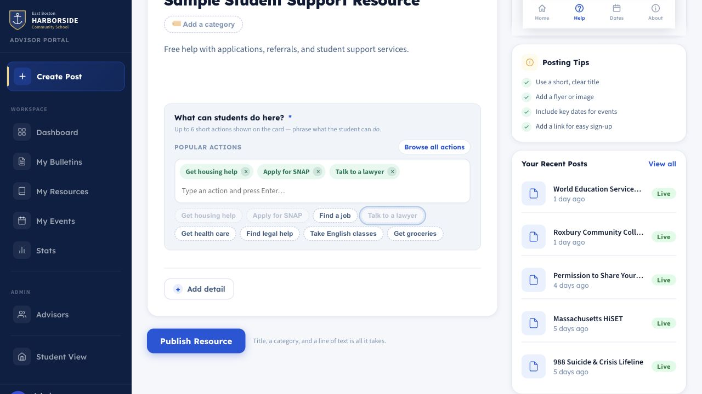
Student action chips are short labels that tell students what a resource helps with, such as Get housing help, Apply for SNAP, or Talk to a lawyer.
- Suggested chips appear based on the resource category.
- Advisors can type a chip and press Enter.
- Advisors can browse/search the chip catalog.
- Up to 6 chips show on the student-facing card.
- Duplicate chips are removed.
- Chips show bilingual labels where translations exist.
Extra Buttons On Resource Cards
Extra buttons add more actions to a resource card. Use them for application steps, eligibility details, forms, flyers, or PDFs.
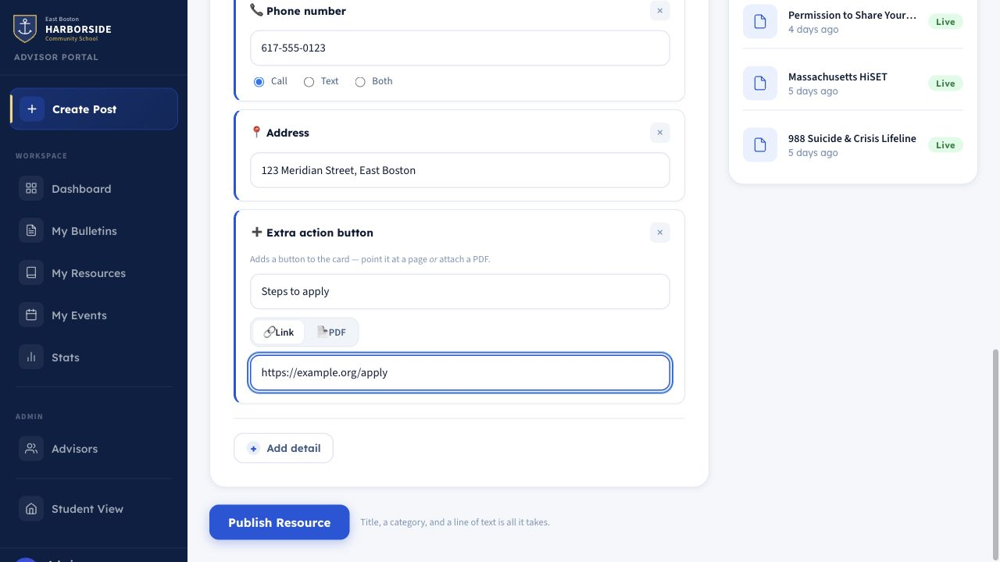
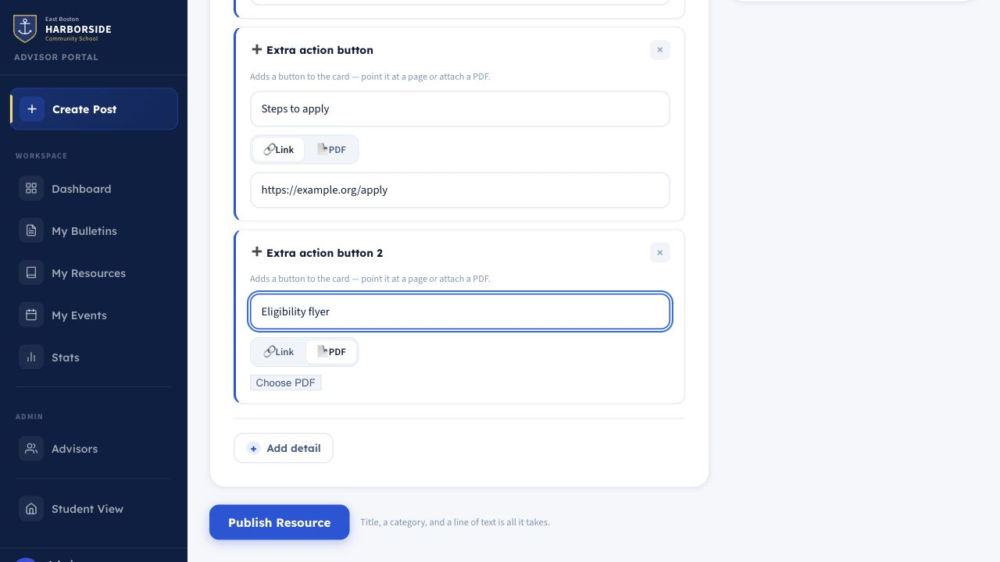
- A resource can have up to 5 extra buttons.
- Each button needs an English label.
- Spanish label falls back to English when left blank.
- Each button can point to a URL or a PDF.
- URL buttons open in a new browser tab; PDF buttons open the uploaded PDF.
What Students See
Student cards show the most useful actions directly on the card.

Depending on the resource details, students may see Call, Website, Directions, Open form, Official source, extra action buttons, student action chips, and a share button.
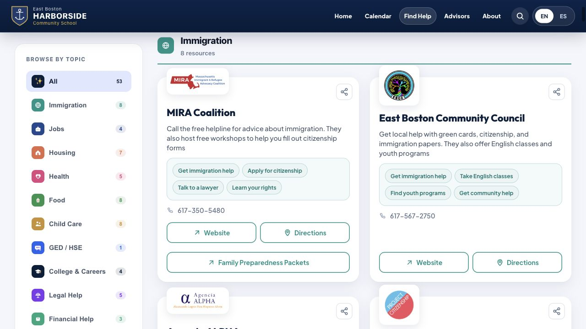
Manage And Edit Posts
Open the matching management section for the type of post you want to update:
- My Bulletins for announcements, jobs, trainings, and general bulletins.
- My Resources for Find Help resources and documents.
- My Events for calendar events.
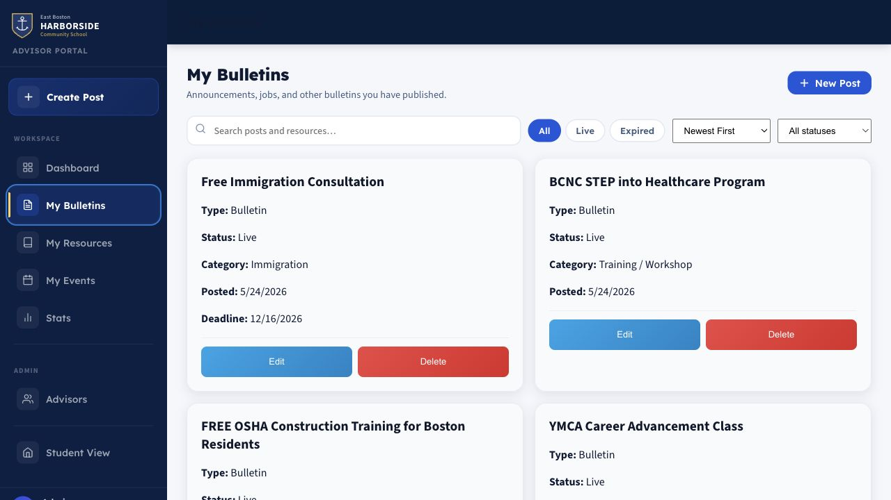
Best Practices
- Write titles students can understand quickly.
- Put the most important student action in the first sentence.
- Add Spanish text when possible.
- Use multiple sessions instead of duplicate posts for repeated events.
- Use resource chips for concrete services, not general descriptions.
- Keep extra buttons specific and action-oriented.
- Preview before publishing.
- Remove or update old posts regularly.
Quick Reference
| Task | Where to go |
|---|---|
| Log in | Student site footer - Advisor Portal |
| Create a bulletin | Create Post - Bulletin |
| Create a resource | Create Post - Resource |
| Add repeated event dates | Add detail - Dates & times - Multiple sessions |
| Add student action chips | Resource composer chip field |
| Add extra URL/PDF buttons | Resource composer - Add detail - Extra button |
| Edit or delete | My Bulletins, My Resources, or My Events |
Print tip: open this HTML file in a browser and use File - Print. Choose “Save as PDF” to make a shareable PDF copy.